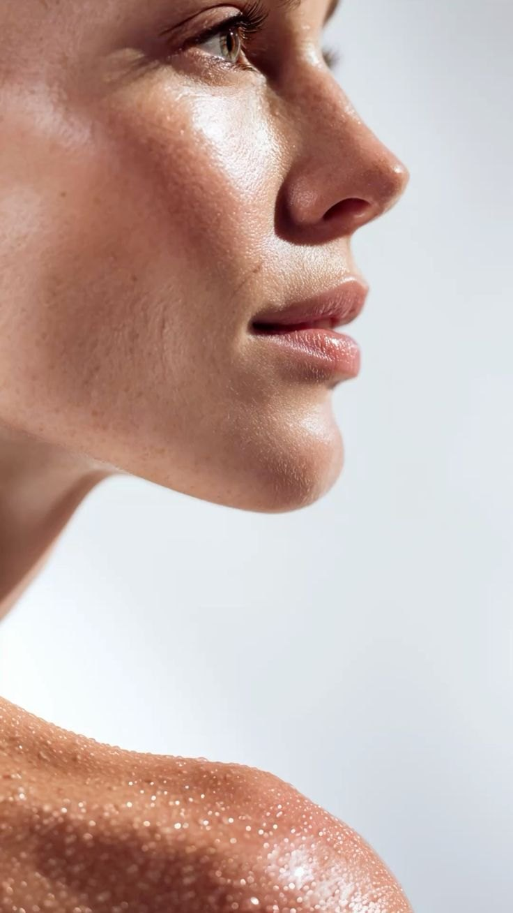

Face · Procedure guide
Rhinoplasty in London.
Surgery to reshape the nose, for appearance, breathing or both. This guide explains who it suits, what the operation involves, how recovery really goes and what can go wrong, so you arrive at your consultation with better questions.

- Anaesthetic
- General
- Operation
- Usually 2–3 hours
- Hospital stay
- Day case, sometimes 1 night
- Back to desk work
- Usually 1–2 weeks
- Final result
- 12 months or more
Is rhinoplasty right for you?
People consider rhinoplasty for many reasons: a bump on the bridge, a tip they feel is too wide, a nose that has changed after an injury, or breathing that’s never felt quite right. The first consultation is about understanding which of these matters to you, and whether surgery is the right answer.
It may suit you if
- You’re 18 or over and your face has finished growing
- You have a specific change in mind, rather than a wish to look like someone else
- You have breathing problems linked to the shape inside your nose
- You’re in good general health and don’t smoke, or are willing to stop
We may suggest waiting if
- You’ve had a recent injury, as swelling can take months to settle
- You’re making the decision during a stressful time in your life
- Worry about your appearance is affecting daily life. We may suggest speaking to someone first, and we’ll help you find the right support
- The change you’d like isn’t something surgery can reliably deliver
Keeping your features yours. Many of our patients want refinement, not a different nose. Mr Sethi plans every change around your own face and heritage, so the result looks like you, only more at ease.
What the operation involves.
Rhinoplasty is carried out under general anaesthetic at a CQC-registered hospital, with a consultant anaesthetist. Most operations take two to three hours, and most patients go home the same day.
A small incision under the tip
Gives a clear view of the structure of the nose. Often used for tip work and more complex changes. The scar usually fades to a fine line.
Incisions inside the nose
No visible scar. Suited to some smaller changes, such as reducing a bump on the bridge.
Shape and breathing together
Straightens the wall inside the nose (the septum) at the same time, for patients whose breathing is affected.
Mr Sethi will recommend an approach after examining your nose and asking about your breathing. He’ll take clinical photographs to plan with you. We don’t use morphing software, because an edited photo can promise a result no surgeon can guarantee.
Recovery, week by week.
Everyone heals at their own pace, so treat this as a typical picture rather than a promise. Your own plan is written down before surgery.
- Day of surgery
You’ll wake with a small splint on the nose and some packing or soft dressings. Most people go home the same evening with someone to stay with them.
- Days 1–3
Swelling and bruising around the eyes peak. Sleep with your head raised and rest. Discomfort is usually managed with simple painkillers.
- Around 1 week
The splint and any stitches are removed at your first review. Your nose will look swollen, which is normal.
- Weeks 2–3
Most visible bruising has faded and many people return to desk work. Avoid blowing your nose hard and resting glasses on the bridge.
- Around 6 weeks
Most everyday activities and gentle exercise can resume. Contact sport stays off the list until you’re cleared.
- 3 months
Your nose will look much more settled, though the tip often stays slightly swollen for longer.
- 12 months and beyond
The final shape emerges as the last swelling settles. Your review appointments run across this whole year.
What can go wrong.
All surgery carries risk. These are the main ones to know about. Mr Sethi will talk through each of them with you, along with anything specific to your own health, before you’re asked to consent.
Bleeding
A small nosebleed is common in the first days. Heavier bleeding is uncommon but may need treatment.
Infection
Uncommon, and usually treated with antibiotics.
Breathing changes
The nose often feels blocked while swollen. Rarely, breathing can be worse after surgery and need further treatment.
Shape and symmetry
Healing isn’t entirely predictable. Small irregularities can appear as swelling settles, and a small proportion of patients choose further surgery.
Numbness and scarring
The tip may feel numb for some months. With an open approach, the small scar under the tip usually fades well.
Anaesthetic risks
Serious problems are rare. Your consultant anaesthetist will assess you before surgery.
If you have a concern after surgery, you’ll have a 24-hour number that reaches the team directly. Our revision policy is explained in writing before you book.
What rhinoplasty costs.
The fee depends on whether you need tip work, bridge work, breathing surgery or a combination, so it’s confirmed in writing after your first consultation as a single, all-inclusive figure. There are no offers or deadlines.
Rhinoplasty for appearance alone isn’t usually available on the NHS. If your main problem is breathing, you may be eligible for NHS assessment, and Mr Sethi will tell you if so.
Rhinoplasty questions.
Guide reviewed by Mr Rohan Sethi, Consultant Plastic Surgeon, November 2026. This page is general information and not a substitute for a face-to-face consultation.